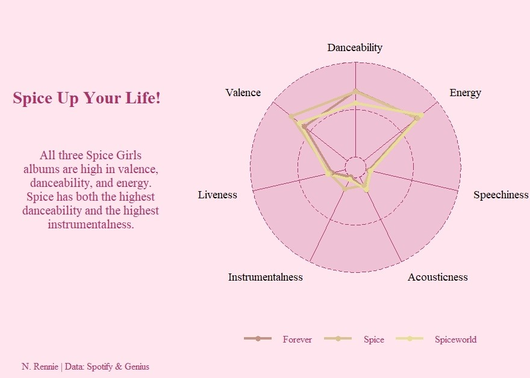

Thinking about #TidyTuesday (and the Spice Girls)
Earlier this week, whilst curating for @WeAreRLadies, I tweeted a thread on my thought process for this week's #TidyTuesday challenge. This blog post expands on the thoughts in that thread.
By Nicola Rennie in Data Visualisation
December 18, 2021
Earlier this week, whilst curating for @ WeAreRLadies, I tweeted a thread on my thought process for this week’s #TidyTuesday challenge. This blog post expands on the thoughts in this aforementioned thread:
It can be a little bit scary to make your first (or any) contribution to #TidyTuesday on twitter so I thought I’d outline my thought process for this week’s Spice Girls data. pic.twitter.com/zsyV3mfRkG
— We are R-Ladies (@WeAreRLadies) December 14, 2021
For those of you who don’t know, #TidyTuesday is a weekly data challenge aimed at the R community. Every week a new dataset is posted alongside a chart or article related to that dataset, and ask participants explore the data. You can access the data and find out more here.
It can be a little bit scary to make your first (or any) contribution to #TidyTuesday on twitter especially when the quality of the submissions you see is so high. So I thought I’d outline my thought process for this week’s Spice Girls data.

Image from tenor.com/view/wannabe-spice-girls-gif-13245102
Exploring the data
This week there are actually three different data sets. Although this can be a good opportunity to practice different types of joins of dataframes, to avoid getting overwhelmed, it might be a good idea to just focus on one of these data sets. I’m going to focus on the studio_album_tracks data.
Reading the data dictionary provided with the data set is usually my first step. Variables aren’t always named the most useful things (although they are this week!) and this helps me understand what the data actually is. There are quite a lot of variables in this data set.
Since I come from a time series/forecasting background, the first thing that catches my eye is the album_release_date. However, (sadly) the Spice Girls only released three albums so it’s not quite enough time periods to look at time dependence.
There are quite a lot of variables with values between 0 and 1 e.g. danceability, energy, … This makes me think that a spider plot (AKA radar plot) might be appropriate. I also keep a list of plot types/packages that I’d like to experiment with and spider plots are one of the chart types on my list. I’ve never made a spider plot in R before so this will be a learning experience for me too. Not everyone is a fan of spider plots but it’s still useful to learn new things.
Building a basic plot
So let’s make a spider plot showing the average danceability, energy, speechiness, acousticness, instrumentalness, liveness, valence for each of the albums released.
To start off plotting, I usually pull out the variables that I’m going to use by using select() from {dplyr}. Then I use group_by() and summarise_if() to calculate the mean of each of my variables.
Now for the fun part – plotting! There isn’t a built in geom within {ggplot2} to create spider plots, so it’s off to Google I go. The {ggradar} package on GitHub by @
ricardobion is compatible with {ggplot2} so it seems like a viable option.

I now have a basic spider plot, and I can get started think a bit about design.
Making it look pretty
Viewing the help files for the package (or function) are really useful in helping me to decide what elements of the spider plot I can customise easily.
Although extra graphics are always fun, spiders plots are already quite complex to read so I decide on a minimalist theme. Most of this, if not all will be done using just {ggplot2} functions. The theme() options are the most useful.
I add some captions, including some a subtitle (or tag) to explain what the plot tells a viewer. In terms of choosing a colour scheme, I like to choose something related to the data. This week’s data is perfect for using the Spice Girls palette from the {popthemes} package from @
_johnmackintosh. There doesn’t seem to be an option to change the axis label colour in ggradar so I may add these labels in a different colour later using an annotation layer.
Now the only thing left to do is post the final version to twitter with the #TidyTuesday hashtag.

The code for this plot is on GitHub if you want to play around with it and create your own version.
Final Thoughts
I’ll blog about my experience of curating in a later post, but for now I hope that sharing my process for creating a data visualisation has been helpful. Why don’t you participate in your first TidyTuesday if you haven’t already?